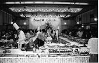
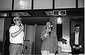
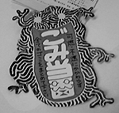

舞台の上でスタッフの紹介が行われ、だんだんマイクを鈴木プロデューサーに奪われていく野中さん。一番下右側の写真は、松田さん、石田さん、宮崎監督です。
97.6.1（日）
宮崎監督、テレセンに向かう前に撮影部でデジタル合成のチェック。
例のリテークの為、撮影は今日も出勤。
97.6.2（月）
デジタルのリテークを含め、とりあえず撮影部の作業が全て終了する。明日のラッシュチェックで何事もなければ…ま、リテークが1つもないわけないか。
仕上、撮影部とCG室の大改装を前に、CG室が一時的に避難する編集室をきれいに片付けなければならないのだが、スタインベック等移動する場所に困る物が多い。おまけに撮影室からも、ビデオ編集機をどこかに持ってってくれ、との要望が出る。いったい何処に…。
97.6.3（火）
宮崎監督がテレセンへ行く都合から、朝10時よりラッシュチェック。数CUTリテークが出る。
リテーク分の撮影をイマジカの持ち込みに間に合わせようと頑張るが、1CUTこぼれる（例の大判マシン300枚のCUTだ）。
テレセンから全ラッシュを回収し、伊藤氏が、全てのCUTについて、きちんとOK分のテイクが差し替えられているかどうかチェック。
元ジブリ演助の村田氏が来社し、彼のいるOLMで制作した、音楽プロモーションアニメのビデオを、高畑監督を含めた十数人で鑑賞。
97.6.4（水）
再び朝10時からラッシュチェック。例の大判とデジタルのリテークCUTは明日チェック予定。これで全て終了の予定。
仕上では外注スタジオから回収した膨大な絵の具整理が始まる。制作も若手がお手伝い。ついでに取材に来ていたコミックボックスの若手もお手伝い。
平行して倉庫の整理も始める。
テレセンへこもっている鈴木プロデューサーから「髭剃りを持ってきて」等怪しげな連絡がジブリに来はじめた。よみがえる「耳をすませば」の悪夢。
97.6.5（木）
10時からラッシュチェック。全てOK。モニターではOKが出ているデジタルのリテークCUTは明日朝にチェック。
明日からのファイナルミックスを控え、冒頭のトトロマーク、CUT1、2、タイトルのオプチカルが上がってくる。伊藤氏が、宮崎監督が詰めているテレセンにラッシュを持って行き、チェックしてもらうが、なんとその全てがリテークになってしまう。理由は様々。その対処で奥井、伊藤両氏を中心に大騒ぎ。再度瀬山さんにオプチカル出しをしてもらうことになるが、ロール1の原版が組めないので、後回しにすることに。
97.6.6（金）
最後のデジタルCUTのラッシュを宮崎監督がチェック。もちろんOK。あとは昨日のオプチカルのみ。
瀬山さんに出してもらったCUT1のテイク1を持って奥井さんとイマジカへ行きオプチカルの関口さんと打ち合わせ。月曜日の6時からリテークになったオプチカルの直しをチェックすることに。月曜日といえば、ファイナル最後の日。何事もなければなんとか間に合うはずだが…。
ロール1と2のファイナルミックス終了。
97.6.7（土）
テレセンへラッシュを回収のついでに様子を見てくる。初めて音付きでラッシュを見たが、デジタル6チャンネルの威力は絶大、効果音等がものすごい音圧で迫ってくる。音楽もオケの音が実にクリアーで小気味イイ。ところで長期のテレセン通いの為、案の定宮崎監督、鈴木プロデューサー、若林さんらスタジオにいる全員がハイな状態になっている。待ち時間に、お菓子を食い、ユンケルを飲み、ケン玉やコマ遊びに興じる様はこの世のものとは思えない。ロール3、4のファイナルミックス終了。
97.6.8（日）
今日のファイナルミックスの作業は思いの外順調に進み、夜の８時にはロール5、6の作業が終了。
97.6.9（月）
奥井氏、伊藤氏と共にイマジカへ冒頭CUTのオプチカルをチェックに向かうが、こちらが思っていたようにCUTがつながらずリテーク。その場でもう一度2パターンのオプチカルを発注する。瀬山さんは、ロール1に関して冒頭以外の原版を組み終わって待機中だったが、そういう訳で明日に延期。今度こそ本当に最後の最後。
テレセンでは、久石さんも交えて最後の３ロールのファイナルミックスが行われていたが、12時ころ無事終了。
97.6.10（火）
スイスロマンドテレビ局のブリュノ・エドラ氏が取材で来社。通訳兼案内は並木孝氏。宮崎監督、高畑監督のインタビュー等を行う。
イマジカでオプチカルのチェック。2種類とも大体うまくいっているようだ。とにかく宮崎監督に判断してもらうため、ジブリに取って返し、35mmで見せる。結局CUT1のテイク3で合成したバージョンを本編で使うことになる。早速ネガと16mm縮小ラッシュを瀬山さんに届ける。が、ここで終わらないのがもののけのタタリか。約30分後、瀬山さんからTEL。本来CUT1、2合わせて43秒の尺数が44秒あるという。前後の音まできっちり合わせてあるのでこれでは本編で使えない。昨日の打ち合わせを口頭のみで行ったのが原因か。急遽イマジカに連絡し、オプチカルのやり直しとなる。上がりは12日の午前中。0号試写の前日だ。もう失敗はゆるされない。ひえー。
97.6.11（水）
今日はテレセンの作業で全ラッシュが必要なため、瀬山編集で原版作業中の8、9ロールを、必要になった時点でテレセンに一時運ばなければいけない。という訳で午後一時頃、瀬山編集からテレセンへ。テレセンでの作業が終わった午後四時頃、今度はテレセンから瀬山編集へ運び、原版作業を再開。
瀬山さんが原版を全部組み終わったのは午前三時頃。
97.6.12（木）
朝9時に瀬山編集に立ちよって、音ネガ合わせ作業の為の機材を車に積み込み、瀬山さんと共にイマジカへ向かう。10時すぎに到着するも、前作業が若干遅れ気味で11時すぎからとなる。最後の原版組みで朝3時まで作業をしていた瀬山さんは「あと30分は寝られた」と一言。
同じくイマジカで11時から、例のCUT1、2のオプチカルの再々チェック。今度はバッチリ。
97.6.13（金）
午後1時から0号試写。何事もないように、と祈りつつ上映開始を待つ。しかしその祈りも虚しく、2ロール目の頭で何故か音ずれ。試写を一旦中止し、残りロールのずれをチェック。幸いずれていたのが2ロールめのデジタル音声だけだったので、2ロールのみアナログ音声で再生する方法で、始めから試写をやり直し。音ずれに関しては初号までになんとか直すことに。
音の問題はさておき、とりあえず0号が終了したので、宮崎監督以下、メインスタッフ有志約10人がイマジカの帰りに恵比須ガーデンプレイスのビアガーデンで乾杯。しかしみんな見事にガーデンプレイスには似合わない人ばかり。
97.6.14（土）
0号が終わってホッとしたのか、宮崎監督は部屋で原稿を書いたり、長椅子に寝っころがって読書をしている。
美術部の打ち上げパーティが行われる。
97.6.15（日）
休日
97.6.16（月）
昨日宮崎監督が足を捻挫。
16時半よりイマジカにて初号試写。石田ゆり子さんや筑紫哲也さんも来る。徳間社長の両となり宮崎監督と高畑監督が座り上映開始。試写はさしたる問題もなく終了。0号の時多少問題になった音の大きさについては、3デシベルレベルを上げることで解決していた。
97.6.17（火）
「もののけ姫」の完成打ち上げパーティーが、吉祥寺で行われる。ゲストは松田洋治さんと石田ゆり子さんのアシタカ・サンコンビ。映画に携わった方々300人以上集まる盛況ぶりで、用意したお土産も足りなくなるほど。司会をつとめていた野中さんは、途中司会進行を鈴木プロデューサーに奪われてしまい「私の不徳のいたすところです」と少し残念そうだった。はりきって司会に臨んでいたから無理もないか。徳間書店、室井さんが一本締めの音頭をとり、打ち上げパーティーも無事終了。皆さん本当にお疲れさまでした。


97.6.18（水）
打ち上げの余韻を楽しむ間もなく「スーパーマン」の作業を続行。
宮崎監督も取材で大忙し。
今日から休暇のはずの制作の田中さんも何故か朝から出社。某誌との打ち合せを終え、無事故郷北海道へと旅立てるのでしょうか?
97.6.19（木）
宮崎監督による日テレ・グッズ・オークションが行われる。ライター、時計、トレーナー、キーホルダーなどなど、役立つものから無駄なものまで多種多様。オークションとは名ばかりに、無料で配ったためか、スタッフ一同大いに盛り上がる。（居）
明日から、宮崎監督、鈴木プロデューサーが全国キャンペーンに出かける。その模様をインターネットで伝えるためのレポーターを東宝伴田さんにお願いする。ちなみに伴田さんとの連絡は電話で行うことに。その日の模様を伴田さんより聞いて、こちらでまとめてインターネットに載せる形をとる。過密スケジュールの中、伴田さんといかに上手く連絡をとるかがポイントになってくる。とりあえず、明日の伴田さんレポートをお楽しみに。（石）
97.6.20（金）
宮崎監督と鈴木プロデューサーは、映画キャンペーンに今日から出発。スタジオ内が急に静かに。
台風がジブリにも上陸し、木が次々と折れる。安全を考え、地元消防団、近所の方々の協力を得て、危ない木を切ってまわる。最終的にはチェーンソーまで持ち出すことになった。やはり生木は切れにくい。
97.6.21（土）
仕上、CG室の電気系統の工事のため、朝10時までジブリ全館停電。これでデジタル化に向け、一歩前進する予定
97.6.23（月）
しばらく紛失していたゴミ当番表が発見される。これは、タタリ神の姿をあしらい、自分がゴミ当番であることがわかるだけでなく、せつなさも感じさせるというもの。紛失時には「当番表なくしてはジブリがゴミの山に埋もれる!!」と危惧されていたものである。何はともあれ、出てきてくれて助かった。

| 次のページへ |
| 日誌索引へ戻る |
| 「もののけ姫」トップページへ戻る |